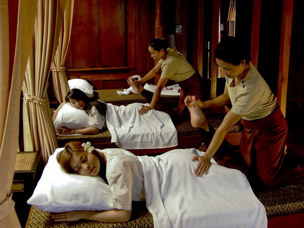

Thailnad Travel
태국의 액티비티
코끼리 트레킹
코끼리 트레킹 또는 코끼리 목욕시키기 체험을 태국 끄라비에서 즐겨보세요! 호텔 왕복 이동 서비스가 포함되어 있으며, 오전 8시부터 오후 5시까지 매 시간마다 출발하기 때문에 더욱 편리하고 안전하게 이용할 수 있어요. 코끼리와 깊이 교감해볼 수 있는 코끼리 트레킹, 코끼리 목욕시키기 체험을 원하는 옵션에 따라 선택하여 즐기며 끄라비 여행에서의 잊지 못할 추억을 남겨보세요. 끄라비 이색 체험으로 잊지 못할 추억을 만들고 싶다면 지금 와그에서 바로 예약하고 떠나보세요!
스쿠버 다이빙
의심할 것도 없이 태국의 놀라운 수천가지의 매력들을 한 중앙의 보석은 정열적이고 관능적인, 정신을 혼미하게 하는 육상 세계에서 떠나는 순간 너무도 독특한 수중 세계로 들어서는 순간 다시 태어나게 됩니다. 당신 앞에 펼쳐지는 장엄한 바다 속 풍격들과 하나가 되는 순간, 그리고 전 세계 최고의 다이브 사이트 중 몇몇을 경험하게 됩니다.
야시장
방콕의 야시장은 태국 수도에서 현지 생활을 가까이 경험할 수 있는 가장 쉽고 재미있는 방법 중 하나예요. 시장은 도시 전역에 퍼져 있고 엄청나게 다양한 상품과 제품, 스낵, 엔터테인먼트를 즐길 수 있는 곳이죠. 어두워지면 달빛 속에서 놀랍도록 저렴한 제품들을 쇼핑할 수 있어요.
마사지

역사적 전통을 갖고 있는 의술의 하나인 타이마사지는 천여년이 넘는 시간에 꾸준한 계승과 발전을 통해 지금까지 이어져 왔다고 합니다. 이 때문에 각 지역마다 계승 방식이 미세하게 달라져 지역마다 타이마사지 기법이 조금씩 다릅니다. 태국의 동부, 중부, 남부 지역마다 마사지 기법이 다르지만, 몸의 치료에 중점을 둔 마사지기법만은 동일합니다. 몸의 혈을 몸의 압력을 사용해 눌러주면서 혈을 자극하고 몸을 이완을 위한 스트레칭이 주가 되는 타이마사지는 손과 팔꿈치와 발, 무릎등을 이용하고 근육의 혈을 자극해주면서 근육을 늘려줌으로 바디의 에너지 라인을 자극하고 근육을 풀어주는 방식으로 마사지를 합니다. 원조 태국 마사지는 타이마사지(누엇 타이)로 오일등을 사용하지 않고 맨 손과 몸의 압력만 이용하여 마사지를 하는 방식입니다.